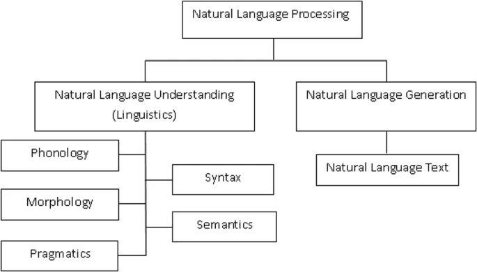

Natural language processing
Natural language processing
Components of NLP

- Natural Language Understanding (NLU)
- Natural Language Generation (NLG)
Difficulties in NLU
- Lexical ambiguity
- Syntax Level ambiguity
- Referential ambiguity
Tasks NLP
- Speech recognition
- Part of speech tagging
- Word sense disambiguation
- Named entity recognition
- Co-reference resolution
- Sentiment analysis
- Natural language generation
History and methods
- Symbolic NLP (1950s - early 1990s)
- Statistical NLP (1990s-2010s)
- Neural NLP (present)
Applications of Natural Language Processing
- Search Autocorrect and Autocomplete
- Language Translation
- Text classification
- Sentiment analysis
- Spell check
- Speech recognition
- Social media monitoring
Application examples
Google Assistant
Amazon Alexa
Cortana
Siri